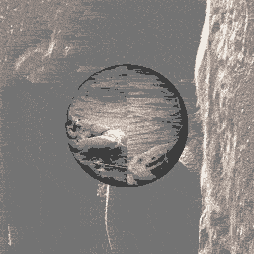

Moon Landing (Space, Artifical, Propaganda)
Space Rocks (Space, Artificial)
Uploading Data (Space, Artificial)
Artifical Faces (AI, Facial_Recognition)
Defaced Hatshepsut (Ancient, Egypt, Propaganda)
Utopia (Ancient, Artificial, Propaganda)
American Soil (Space, Artificial, Propaganda)
Great Sphinx of Giza (Ancient, Egypt, Artificial, Propaganda)
Alexander the Great (Ancient, Artificial, Propaganda)
Terra Nullius (Propaganda, Artificial)
Nefertiti Fragment (Egypt, Propaganda, Ancient)
Antony & Cleopatra (Egypt, Propaganda, Ancient)
Homer's Illiad (Ancient)
Bible Fragment (Propaganda, Ancient)
Hatshepsut Scarab (Egypt, Propaganda, Ancient)
Hatshepsut Head (Egypt, Propaganda, Ancient)
Illiad Fragment (Propaganda, Ancient)
Oddessy Fragment (Propaganda, Ancient)
Oddessy Vase (Propaganda, Ancient)
Aureus of Julius Caesar(Propaganda, Ancient)